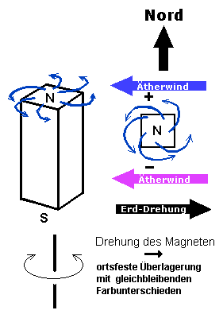

Zusammenfassung Torkado (Stand 19.02.06)
Grundlage folgender Hypothesen ist ein Äther-Weltbild.
Die berühmten Theosophen C.W.Leadbeater und A.Besant (aurasichtige Heiler aus dem 19. und Anfang des 20. Jahrhunderts) haben interessante Berichte geschrieben:
http://www.gaia.dk/bigfiles/OC/OccultAtoms.htm . Das Studium der Arbeit "Okkulte Chemie" ist ein absolutes MUSS, denn es läßt fast keine Fragen mehr offen, jedenfalls zum Äther.Die feinste und unbeweglichste Struktur, in der sich das Licht ausbreitet, betrifft erst die siebente Hierarchie-Ebene.
Es gibt nur Äther, wenn auch in vielen Entwicklungshierarchien gestaffelt.
Genauer: geordnete (kalt) oder ungeordnete Bewegung des Äther (heiß). Wo sich Äther ordnet, entstehen neue Hohlräume. Der Hohlraum erzeugt einen Sog auf den Rest, und wenn der Sog so gerichtet ist, dass er wieder die Ordnung fördert, breitet sie sich aus.Die Entstehung von Hohlraum kann der Antrieb der Ganzen Welt sein. Die Energie für alle Rotationen, auch die der Galaxien und noch größerer Systeme, stammt nach dieser Sicht aus allen Ebenen mit Strukturen, die begonnen haben, sich geordnet zu bewegen und ihre chaotische Umgebung in die Ordnung einzugliedern.
Voraussetzung zum Verständnis des Torkadobegriffes ist die Annahme einer geordneten Strömung, ein fast linear strömendes Umgebungsfluid auf der jeweiligen Betrachtungsebene, das im Folgenden Mutterfeld genannt wird. Dies gilt z.B. auch für eine Wasserströmung, wenn ein Wassersoliton betrachtet wird.
Die Wortschöpfung Torkado kommt von Tornado und meint alle spiraligen Bewegungen von Teilchen, die einen Raum umschließen und sich in ihrem Mutterfeld so ausrichten, dass sie zur Aufrechterhaltung ihrer Bewegungsbahnen Energie einsammeln können. Dabei wird das Mutterfeld geschwächt, in ihm breiten sich Unterdruck-Wellen aus, die induzierten Magnetfeldern entsprechen.Der Torkado selbst bildet im Ganzen eine Struktur, die man auch als Teilchen bezeichnen kann (Bsp. UrAtom). Seine inneren Subteilchen sind sehr viel kleiner, z.B. 1/127, aber immer diskreter Größe, denn sie sind ebenfalls Torkadostrukturen, d.h. sie strukturieren sich nach demselben Prinzip.
Das umgebende Mutterfeld wird durch die Anwesenheit des Torkado verändert, es erhält eine neue Strukturierung. Zum Einen die oben erwähnten Unterdruckwellen. Zum Anderen bildet sich im Zentrum der wirbelnden Subteilchen ein dünner, wie zum Seil gedrehter Zopf (siehe Skizze) viel feinerer Struktur, der sich im zentrumsfernen fallenden Bewegungsabschnitt dem Mutterfeld mit der vertikalen Komponente entgegenstemmt, im zentrumsnahen steilen Aufwärts-Abschnitt es aber fast voll verstärkt. Er ist eine Art Jet, wie ihn ein Strahltriebwerk ausstößt. Mit jedem Umlauf verstärkt sich dieser Zopf bzw. Faden, er wird zu einer spiraligen Schiene, auf der das Subteilchen widerstandsfrei dahinjagen kann. Seine Bahn ist damit vorgeformt und festgelegt, auch wenn es gerade nicht vorbeikommt. Alle "Subteilchen-Geschwister" nutzen diese oder ihre eigenen Schienen und takten sich so, dass sie, seitlich über benachbarte Windungen gesehen, mit Sog und Druck voneinander profitieren.
Solche getakteten Sogkanäle bilden auch Zugvögel beim V-förmigen Formationsflug. Deshalb muss der Torkado einen Aufbau haben, der mit jedem Spiralenumlauf die Radien verdoppelt bzw. nach innen halbiert. Wir kennen bereits die Titius-Bodesche Reihe für die Planeten, die Spin-Bahn-Kopplung beim Planeten Merkur (sein Tag dauert genau 2/3 seines Jahres), ganzzahlige Verhältnisse der Umlaufzeiten zwischen Planeten (Jupiter/Saturn 2:5) und Monden (2:1 oder 3:2 oder 3:4) .
Die Sogkanäle setzen sich im gleichen Takt nach außen fort. Die sich daraus bildende Ordnung im Kristall oder Festkörper und im gesamten Kosmos ist eine Folge davon und minimiert die zur Erhaltung jeder Strukturebene notwendige Pumpmenge.Das Elementarresonanzgesetz von Frithjof Müller berechnet Resonanzlängen für alle Elemente des Periodensystems zu
L=Z*Ce*2^N , wobei die Größen Ce=Comptonwellenlänge für Elektronen, Z=Kernladungszahl, N ganze Zahl (bevorzugt N=33+- 13*k)
die Bausteine für die ordnungsbildenden Sog- und Druckgebiete darstellen, die von jedem Atom ausgehen.Die Global-Scaling-Theorie von Hartmut Müller beschreibt das Gleiche, aber mit eigener verwirrender Geheimsprache. Es gibt nicht nur Faltungen mit Faktor Zwei, sondern mit jeder ganzen Zahl. Die Faltung mit exp()-Funktion ist ebenfalls vorhanden, und die Super-Resonanzen treffen sich aller 2^13 und exp(9), weil sich dort die Reihen ungefähr treffen.
Der feinstoffliche Fadenwirbel, der zur Schiene wird, hält gleichzeitig in Rückopplung die Eigendrehung des Subtorkados in Gang, die auch als Energiepuffer dient. Er "zieht ihn auf", wie beim Aufziehkreisel-Spielzeug der gewendelte Mittelstab, auf den das Kind von oben zu drücken hat. Diese neuen dünnen Mutterfeldströmungen fädeln Torkados wie Perlen auf eine Schnur und so können diese auch Schleifen und Sterne bilden (physisches Atom im Inneren, s.Leadbeater/Besant).
Auch hochentwickelte Struktureinheiten, wie Zellen, Organe, Organismen, besitzen "silberschnur-artige" astrale Anbindungen aneinander, ebenso sichtbar beim einfachen Apfelmännchen der Rekursion Z=Z*Z+C aus der Komplexen Zahlenebene.Unsere Welt ist aber nicht erstarrt, alles bewegt sich zusätzlich und stört den himmlischen Frieden des wie eine Uhr tickenden unsichtbaren Skalarwellen-Netzes. Unsichtbar deshalb, weil es normalerweise dicht ist. Es lässt seine Energien kreisen, aber nur für sich und seine Insider, die fraktalen Zwillinge seines Schwingungsmusters.
Durch jede Bewegung, jeden Windhauch, wird das Skalarwellennetz also gestört. Auch dauern die zentrumsfernen Bewegungen innerhalb eines Torkados länger an als die zentrumsnahen, und damit überwiegt mit der Zeit der erzeugte Gegenfluss. Mit jeder Störung teilen und doppeln sich die Jets, Zöpfe, Fäden oder Schienen, bis es ein kompliziertes Gewebe ist, das die erst dünnflüssige Mutterströmung zäh macht, schließlich zum Anhalten bringt und dann in die andere Richtung beschleunigt. Damit geht ein Zyklus zuende, der in gewisser Weise beim größeren Torkado wie eine Umpolung aussieht, und der auch schließlich eine Umpolung seiner Subteilchen bewirken wird, damit alles von vorn losgehen kann. Die Schwingung in einem LC-Schwingkreis ist ein passendes Bild. Das Wort Umpolung muss nicht zwingend eine Bewegungsumkehr bedeuten.Auch wenn eine Rotation in ihre Gegenrotation übergeht, muss dazwischen kein Stillstand herrschen, wie wir es vom Drehpendel kennen.
Wenn der drehende Körper zur Seite kippt, und die Achse raumfest bleibt, wandert die Drehachse relativ zum Drehkörper langsam von einer Seite zur Anderen. Es werden an der Peripherie vorübergehend keine geschlossenen Kreise mehr vollführt, sondern offene Raumkurven, aber am Ende steht die Drehachse antiparallel am gleichen Ort.
Beispiel Wendekreisel:

{kind=link}
####################################################################
Was
sind odische Emanationen ?
(Meine Hypothesen bezüglich der Ergebnisse
des Freiherren Karl von Reichenbach)
Ebenfalls sehr lesenswert sind die Texte des Freiherren Karl von Reichenbach. Sie sind ca. 150 Jahre alt. Er hat über 20 Jahre lang Forschung betrieben unter Zuhilfenahme sensitiver Menschen, die im Dunkeln Magnetfelder, Aura und Biofelder sehen konnten. Von ihm stammt der Begriff Od bzw. die Unterscheidung odisch positiv und odisch negativ.
Das, was diese aurasichtigen Leute sehen können, ist Licht der niederfrequenten Schwebungsfrequenz einer sehr hochfrequenten Hauptschwingung. Solche Menschen sind in der Lage, ihr eigenes Biofeld frequenzmäßig zu variieren und dann mit dem Beobachtungsfeld zu überlagern, bis die Schwebungsfrequenz ins optische Fenster kommt. Sie können das wiederholt für verschiedene Dichtebereiche der sogenannten Aura (feinstoffliche Energie in sieben Schichten/Dichten/Frequenzen um uns herum) - was wiederum ganz direkt mit Ätherphysik zu tun hat, denn die UrAtome sind zerlegbar in jeweils 49 Substrukturen gleicher Art und diese wieder usw. Über sieben hierachischen Ebenen wurde dies beobachtet von Leadbeater und Besant. Diese "Zerlegbarkeit" der Materie und Submaterie über riesige Stufen hinweg führt dazu, dass unser organischer Aufbau in allen diesen Dichte- und Größen-Ebenen ebenfalls vorhanden ist und gegebenenfalls bewusst benutzt werden kann. Gebräuchlich dafür sind die Begriffe "Außersinnliche Wahrnehmung" (ASW), Astrales Schweben und Reisen usw.. Das gehört zum heutigen Stand der Chakrenforschung, so weit war Herr Freiherr von Reichenbach damals nicht. Dafür hat er keine esoterischen Vorurteile und arbeitet vollkommen neutral, richtig wissenschaftlich.
Zum Beispiel hat er einen Magneten untersuchen lassen, während man ihn, senkrechtstehend, um seine vertikale Längsachse rotiert. Er hatte mehrere metallische Polschuhe drauf, die die "Magnet-Od-flamme" in verschiedene Farben aufteilte. Während des Rotierens blieben die Farben ortsfest (nicht magnetfest), also Richtung Nord Blau, Richtung Süd rötlicher usw. .
 | Das bedeutet offensichtlich, dass diese Flammenerscheinungen im Zusammenhang mit der Erdrotation und dem umgebenden Ätherwind entstehen. Die richtungsabhängigen Farbveränderungen zeigen, dass der Ätherfluss, der den Magneten verlässt, auf der einen Seite durch den Ätherwind verstärkt wird (Farbe höherfrequenter) und auf der anderen Seite ihm entgegensteht, also gebremst wird (Farbe niederfrequenter). Der die Erde umgebende Äther wird zu 2/3 bereits mitbewegt, er beträgt aber noch ca. 10 km/s auf der Erdoberfläche (Michelson-Morley-Miller-Ergebnisse). Die reine Absolutgeschwindigkeit der Erdoberfläche beträgt 30 km/s. (Erzeugung der Achskippung) |
Es erinnert an den Doppler-Effekt. Das Ganze wird sich zwar bei so hohen Frequenzen abspielen, dass von Blau und Rot keine Rede sein kann, aber durch die Biofeld-Überlagerung wird alles runtertransformiert ins sichtbare Fenster.
Lohe bzw. Licht überhaupt ist Ätherdampf von sich auflösender Ordnung. Anschaulich gesagt, kann man es sich vorstellen wie rauchendes Trockeneis, das unter Umgehung der flüssigen Phase direkt verdampft. Feste Materie besteht aus Ätherwirbeln hoher Ordnung. Aber nie ist diese Ordnung perfekt, immer ist ein gewisser Anteil am Sublimieren, am Zurückkehren in das Chaos. Wird der Strom dieser "Abgase" sinnvoll gelenkt, kann er die Ordnung weiterhin unterstützen, indem er z.B. die Bewegung eines Teilchens in einer Torkodostruktur antreibt wie ein Turbinenstrahl. Ist dies nicht möglich, bestimmt die Form der jeweiligen Struktur, ob sich das Sublimat verdichten kann. Es wird fokussiert in Spitzen (Finger, Zehen, Kegelspitze, Pyramienspitze) und tritt aus kleinen Öffnungen von Hohlkörpern aus (Ohren, Mund).
Im
allgemeinen haben sich feste Flüsse herausgebildet, die ich aber nicht als Lohe
im Reichenbachschen Sinne bezeichnen würde. Es gibt feste Energieflüsse zwischen
allen stabilen Strukturen, ganz genau wie die Wasserflüsse auf unserem Planeten.
Sie gehören zum System der Ordnungserhaltung. Sie bilden die Kühlungsflächen und
-wände, ohne die sich jedes Atom sofort auflösen würde, um in das kochende Meer
des unstrukturierten Äthers zurückzukehren, der alles umgibt. Diese Flüsse gehen
hinein in eine stabile lebendige Struktur, bringen ihr kinetische Energie, die
alle Wirbelstrukturen weiter am Wirbeln hält, und verlassen sie wieder unter Abtransport
der "Stoffwechselreste", die dann als irreguläre divergente Strömungen
aus dem System ausgeschieden und als "Lohe" gesehen werden . So ist
es auf allen Ebenen, wobei wir nur die dichteste Ebene bewusst erleben.
Pilze
brauchen Wasser, Luft und Schwerkraft. Pflanzen brauchen zusätzlich Sonnenlicht.
Die Tiere haben einen größeren Energiebedarf und helfen nach durch eigene Wasser-
und Nahrungssuche. Trotzdem haben ihre atomaren, molekularen, zellulären und organischen
Ebenen einen eigenen Ordnungserhaltungsbedarf, ein eigenes "Kühlsystem" (Chakren-
und Meridiansystem), das den Tod des Organismus um Tage, Wochen und Jahre überleben
kann, aber ohne das der Organismus keine Minute überlebt, weil er darauf aufgebaut
ist.
Weit unten finden wir das feinstoffliche Ordnungssystem, das auch jeder
Stein besitzt. Es ist planetenweit vernetzt. Alle SiO2-Moleküle singen das gleiche
Lied, liegen "auf einer Welle". Sie hören sich nicht nur, sie bilden ein Richtfunknetz,
das sie untereinander fixiert. Kein Nicht-SiO2-Molekül wird je etwas davon wissen.
Es hat seine eigene Familie, seine eigene feinstoffliche Resonanz. Dieses stoffspezifische
Richtfunknetz darf man sich aber nicht als Telegrafen-Richtfunk mit Hertzschen
Wellen vorstellen. Es ist ein echtes Netz von fliegenden Subteilchen genau dieser
Schwingungart. Ohne sein Familien-Netz ist ein Teilchen dem Tode geweiht. Sein
Ätherwirbel verliert die Kühlung, wird weiter an Ordnung verlieren und in das
heiße Chaos hineinschmelzen, das außerhalb der von Auraschichten abgschirmten
Materie tobt.
Jede Bewegung zerstört einen Teil des Netzes, was entsprechende Materie-Auflösung zur Folge hat, und bewirkt einen Zeitbedarf zum Wiederaufbau des neuen Netzabschnittes. Die physikalische Massenträgheit hat also ganz existentielle Ursachen der Materie- und Submaterie-Stabilität.
Reichenbach hat Schall als Lohequelle gefunden, indem er Stimmgabeln, Saiten und
Glocken beobachten ließ. Durch den Schall wurde Bewegung ausgelöst, also auch
Strukturzerfall. Chemische Reaktionen waren ebenfalls eine Quelle von Lohe, weil
neue Moleküle erst den Anschluss an ihr eigenes Familien-Netz finden müssen.
Die Sheldrakeschen morphogenetischen Felder sind ganz analoge hochkomplexe Netze
für jede einzelne biologische Art.
Der Zeitbedarf zum Wiederaufbau eines durch Bewegung gestörten Netzes könnte den Zeitablauf an sich bedeuten. Man kann Zeit nur durch periodische Bewegung messen. Es gibt keine für alle Lebensformen gültige objektive Zeiteinheit.
Odisch negativ (Blau) ist eine Flamme im abstrahlenden Zustand. Die sich auflösende
Submaterie wird abgegeben, dieser Strahl ist länger.
Odisch positiv (Rot)
ist eine Lichterscheinung im Bereich des einstrahlenden Gebietes, und könnte als
eine Art Rückstau-Effekt einer verstopften Einlass-Öffnung verstanden werden.
Bekannt auch vom Elektrischen Netz: die induktive phasendrehende Netzrückwirkung.
Wenn
der Mensch von einem Energiefluss (körpernahe Ebene) umgeben ist, der auf der
rechten Seite ausströmt, und auf der linken Seite wieder ein, dann ist quasi der
Mensch gleichzeitig Strömungsquelle und Strömungshindernis, wenn seine feinstofflichen
Öffnungen verformt sind.
Jede Konstellation, die den Od-Fluss fördert, wird als angenehm und kühl empfunden.
Wenn man auf der rechten Seite (odisch negativ) schläft, die der od-positiven
Erde zugewandt ist, wird durch die saugende Erde der Fluss nach außen gefördert.
Wenn man mit der linken Seite nach oben in der Sonne liegt, kann die od-negativ
strahlende Sonne den Einwärtsfluss, der links stattfindet, verstärken.
Analog
muss das Händereichen gleicher Hände (üblich rechts-rechts) als unangenehm empfunden
werden, weil beide rechte Hände abstrahlen und damit den Fluss auf beiden Seiten
behindern.
Es gibt bei Mensch und Tier auch eine vertikale Umströmung (Fluss
am Bauch hoch zum Kopf, am Rücken runter), die ebenfalls therapeutisch längst
eingesetzt wird (Mesmersche Striche, Akupunktmassage n. Penzel Mittelmeridian-Massage).
Dieser Text von Gabi Müller steht auf: www.torkado.de/torkado_zusammenfassung.htm
Meine Email-Adresse: info@aladin24.de